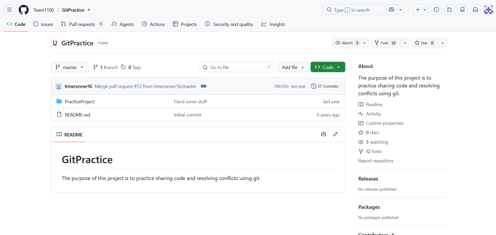
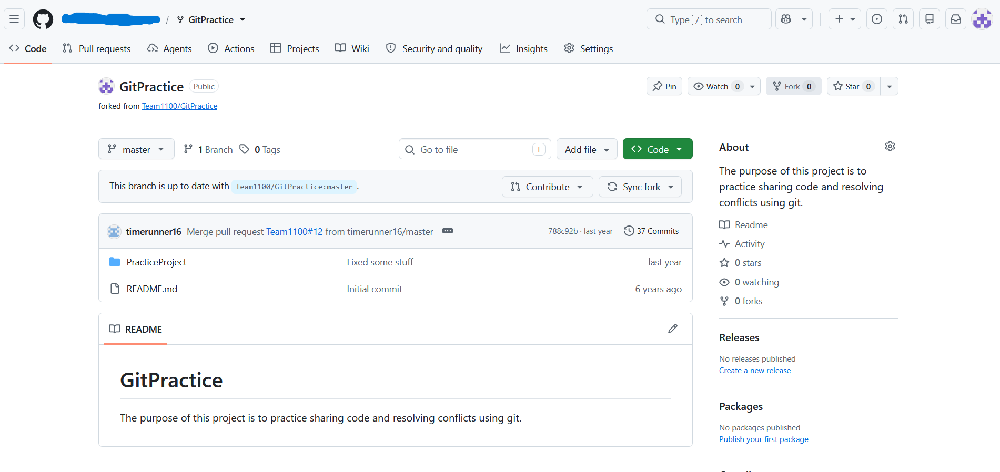
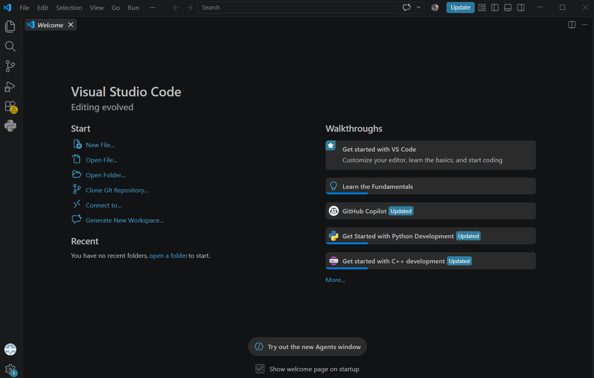
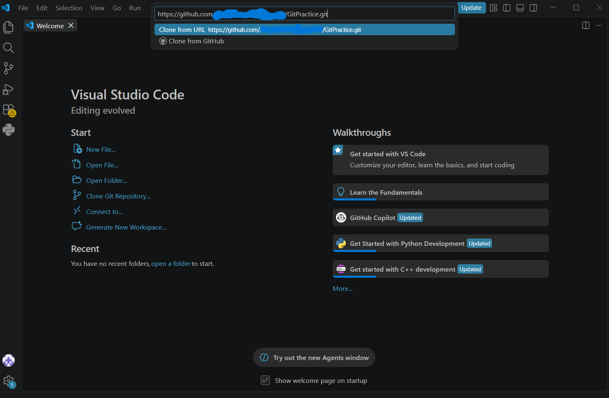

Setting up a Programming Workspace
In order to write code for the robot to use, it is necessary to set up a workspace that is able to push and pull code to Github, while also installing the platform it is built apon.
Downloading WPILib VS Code
WPILib actually has a whole page dedicated to this. Unfortunetly, this won't work on mobile.
Cloning the Repository
Github Repositories are what we use to store our code and allow all members to work on it. In short, the system we use allows individual members to work on sections of the code, send it in to be reviewed where it may be accepted if there are no issues. This means that anyone can work on the code, but changes have to be reviewed in order to avoid issues.
To start, you need to create a Github account. It is recommended to not use your school email for this, because they are often deleted after you graduate.
Next, you need to go to a repository.

See the button that says fork? Click that and then click create a new fork.
You will then be redirected to your fork of the repository, likely looking something like this:

(ignore the scribbles)
Unfortunately, using a school chromebook is likely impossible past this point.
The next step is to download VSCode. If you already have it, navigate to the welcome page, which should look something like this:

Then, go back to your fork and press the fork button and copy the https url.

After that, go back to VSCode and click "Clone Git Repository". Paste the https url.
Pick a folder to store your copy of the code, and open the project.
You are done cloning the repository yippee!!!
Now you are ready to begin coding.